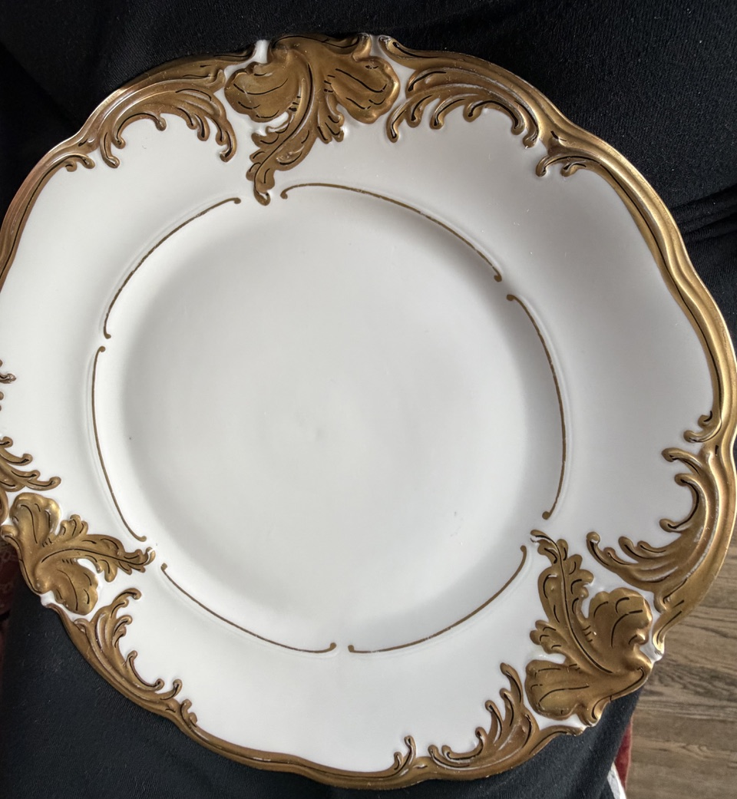

Making History Awards: Chicago’s Version of the Oscars

Biba’s Favorite Things – Steven Zick
Christie’s Steven Zick on $18 million Monets, thrifted highboys, and the parrot who makes him laugh every single day.

What You Need to Know Before Seeing “The Odyssey”
Loyola classicist John Makowski on Homer’s epic, ahead of Christopher Nolan’s new film adaptation.

Canada’s Rocky Mountaineer: Spectacular Scenery and Superb Service
Two days aboard the Gold Leaf dome car from Vancouver to Banff — bagpipers at departure, a grizzly named The Boss, and the spiral tunnels that conquered the “Big Hill.”

Use the Good Dishes… But If They Break, Is Kintsugi an Option?
Gilded porcelain, a shattered mercury clock, and the Japanese art of golden repair — Jill Lowe on why a broken treasure can become even more beautiful than before.

The History of Kiddieland
A candy-colored sign, a Little Dipper rollercoaster that found a new home, and a Costco where the rides used to be — remembering the Melrose Park amusement park that closed in 2009.

Letter from Paris: France’s Record Heatwave
A record-breaking 12-day canicule, an aversion to air conditioning, and a presidential candidate’s “grand plan de climatisation.”